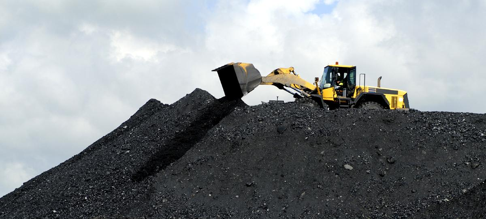

MINING FOSSIL FUELS
Extracting fossil fuels. ... Mining is used to extract solid fossil fuels, such as coal,by digging, scraping, or
otherwise exposing buried resources.
Drilling methods help extract liquid or gaseous fossil fuels that can be forced to flow t the surface, such as
conventional oil and natural gas.
